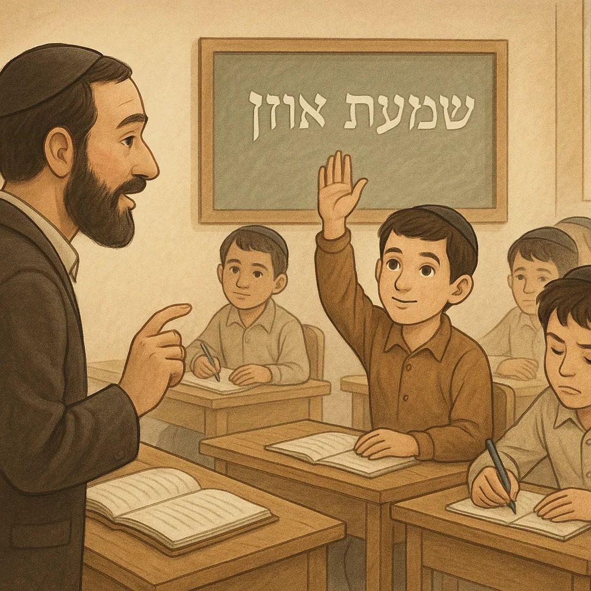

לימוד עצמי מול לימוד לאחרים – מבט תורני, תרבותי ופסיכולוגי
ניתן לקרוא כאן את המחקר עם המקורות
א. נקודת המבט התורנית: ערך הלימוד מול ערך ההוראה
תלמוד תורה לא רק לעצמו אלא גם לאחרים: חז"ל הפליגו בשבח מי שלומד תורה ומלמדה לאחרים. במסכת סנהדרין נאמר שמי שמלמד את בן חברו תורה – “מעלה עליו הכתוב כאילו ילדו”, וזוכה לשבת בישיבה של מעלה; ואף אם נגזרות גזרות רעות, לימוד זה עשוי לבטלןhe.wikisource.orghe.wikisource.org. כלומר, הוראת התורה לאחרים נחשבת כה עמוקה ומשמעותית, עד שיש בה כוח רוחני עצום. הפלא יועץ מדגיש שאמנם אדם מחויב תחילה ללמד את בניו, אך אשרי מי שאוחז בזה וגם מזה – גם מלמד את בני זולתו, כי ייתכן שתלמידיו יצליחו אף יותר מבניו, ויגרמו לו שמחה מרובהhe.wikisource.org. גדול מלמד התינוקות משלומד לעצמו: עוד מטעים הפלא יועץ שקיים הבדל מהותי בין לימוד עצמי מעמיק לבין השקעת הזמן בלימוד ילדים. הוא כותב: “מי שמעשיו לשם שמים… לא יחוש על ביטול הספק לימוד העצמי, רק יבחר במה שיותר נחת רוח לבורא”, ומסביר: יותר נחת רוח לפני ה' כאשר אדם מלמד את בן חברו אפילו את אותיות האלף-בית – “הבל שאין בו חטא” – מאשר אם היה לומד לעצמו סוגיות עמוקות כנגעים ואהלותhe.wikisource.org. הוא מצטט את דברי הירושלמי: “אם אין גדיים – אין תיישים”he.wikisource.org – בלי ילדים לומדים לא יהיו לנו גדולי תורה בעתיד – ומסיק שלימוד הקטנים קודם לכל, “ולפום צערא אגרא” – לפי המאמץ השכר.
הפלא יועץ, ערך "תלמידים": “יותר ויותר עושה נחת רוח ליוצרו במה שלומד את בן חברו ואפילו אלף־בית… ממה שילמד הוא נגעים ואהלות. ואם אין גדיים – אין תיישים”he.wikisource.org (תרגום: עדיף בעיני ה' שתלמד את ילדו של חברך אפילו את יסודות האלף-בית – שהבל פיהם טהור מחטא – יותר מאשר שתשב בעצמך ותעמיק במסכתות נגעים ואהלות. הרי אם לא נגדל גדיים [ילדים], לא יהיו לנו תיישים [גדולים]!).
חז"ל הפליגו אף יותר: “המלמד את בן חברו תורה… אפילו הקדוש ברוך הוא גוזר גזרה – הוא מבטלה”he.wikisource.org. כלומר, כוחו של מלמד גדול עד כדי כך שהתפילות והזכויות שלו יכולות לשנות גזרות בשמים. חשיבות "הבל תינוקות של בית רבן": הגמרא אומרת: “אין העולם מתקיים אלא בשביל הבל פיהם של תינוקות של בית רבן”mechon-mamre.org. רבי פפא שאל את אביי: מה איתנו, לומדי התורה הבוגרים? השיב לו אביי: “אין דומה הבל פה שיש בו חטא להבל פה שאין בו חטא”he.wikisource.org. כלומר, יש טהרה מיוחדת בלימוד הילדים שאין כמוה בלימוד המבוגרים. לכן נפסק להלכה שאסור לבטל תינוקות של בית רבן מלימודם אפילו לבניין בית המקדשhe.wikisource.org! הרמב"ם מביא את הדברים ומדגיש: “שאין העולם מתקיים אלא בהבל פיהם של תינוקות של בית רבן”mechon-mamre.org. הוא אף מזהיר שמלמד שמתעסק בדברים אחרים ומתרשל – הרי הוא בכלל “ארור עושה מלאכת ה' רמייה”mechon-mamre.org, כי הוראת התורה היא ממש מלאכת שמים. מלמד כזה צריך להיות ירא שמים ונאמן בתפקידו.
רמב"ם, הלכות ת"ת פרק ב': “מושיבין מלמדי תינוקות… וכל עיר שאין בה תינוקות של בית רבן – מחרימין את אנשי העיר… שאין העולם מתקיים אלא בהבל פיהם של תינוקות של בית רבן”mechon-mamre.org. ועוד: “מלמד תינוקות שמניח את התינוקות ויוצא, או עושה מלאכה אחרת עמהם, או מתרשל – הרי הוא בכלל ‘ארור עושה מלאכת ה' רמייה’”mechon-mamre.org.
מעלות המלמד וסגנון ההוראה: במקורותינו, מלמד התינוקות זוכה לשבחים רבים. הגמרא בבבא בתרא משבחת את מלמדי תינוקות כ“מצדיקי הרבים ככוכבים לעולם ועד”he.wikisource.org. היא מספרת על רב שמואל בר שילת, מלמד מסור, שרב שאל אותו: איך עזבת את תפקידך רגע? השיב: “כבר 13 שנה לא ראיתי את בני הבית שלי ביום, וגם עכשיו ליבי אצל התינוקות”he.wikisource.org. רואים שמלמד אמת הוא מי שמוסר נפשו לתלמידיו, ומתמיד בעבודתו באמונה. הגמרא מסיקה: כל מלמד שאינו נוהג במסירות כזו – אינו בכלל “מצדיקי הרבים”he.wikisource.org. הפלא יועץ מאריך שגם עבודת המלמד דורשת חכמה יתרה, לדעת להתאים את ההסבר לשכלו של כל ילד: ללמד ביסודות, “מעט המחזיק את המרובה”, לוודא שהדברים נקבעים בלב התלמידים ולא רק שינון שטחיhe.wikisource.org. עליו גם להשריש ביראת שמים ומידות, לא רק ידע טכניhe.wikisource.org. סיפור המעשה – כוחה של מסירות המלמד: במסכת תענית מסופר על "מלמד דרדקים" (מלמד ילדים) אלמוני שבזכותו ירדו גשמים. רב הגיע לעיר בשעת בצורת, גזר תענית – ולא ירד גשם. ניגש שליח ציבור לתיבה, וכשהוא התפלל “משיב הרוח” נשבה רוח, וכשאמר “מוריד הגשם” – החל לרדת גשם. רב השתומם ושאל אותו: מה מעשיך? התברר שהוא מלמד תינוקות. הוא סיפר לרב: “אני מקריא ומלמד עניים כבני עשירים, וממי שאין בידו לשלם איני נוטל שכר. יש לי בריכת דגים, וכל ילד שמתקשה או משתובב – אני ‘משחד’ אותו בדג, ומשדל אותו עד שחוזר ללמוד”yeshiva.org.il. כששמע זאת רב, הבין שזכות המסירות והחסד של המלמד היא שהביאה את הגשם. חכמים למדו מכאן כמה גדולה זכותו של מלמד נאמן, עד שתפילתו פועלת ישועות במקום שאפילו תפילת גדול הדור (רב) לא נענתהhe.wikisource.org. לימוד לאחרים כעדיפות הלכתית?: הרמב"ם ואחרים פוסקים שיש מצווה על כל חכם בישראל ללמד תלמידים, לא רק את בניוph.yhb.org.il. למעשה, מצוות תלמוד תורה כוללת גם ללמד לאחרים (כמו שנדרש “ושיננתם לבניך” – אלו תלמידיך). עם זאת, הודגש בהלכה שבנו קודם לתלמיד אחר, אבל אחרי שמקיים חובת בניו – מצווה להרביץ תורה ברביםhe.wikisource.org. אין ספק, לפי המקורות שראינו, שהתועלת הרוחנית של הפצת תורה גדולה לאין ערוך מלימוד אישי גרידא. אם כך, מדוע רבים מגדולי ישראל לא שמשו כמלמדי קטנים? הרי לפי המקורות לכאורה “גדול המלמד”… התשובה נעוצה הן בצרכים המעשיים והן בכישורים ותפקידים שונים בעם ישראל. לא כל תלמיד חכם הוא בהכרח מחנך לילדים – צריך סבלנות, כישרון הוראה ויכולת לרדת לעולמם של קטנים. גדולי ישראל רבים תרמו בדרכים אחרות: בהנהגת ישיבות לבחורים מבוגרים, בהוראה ופסק, בחידוש חידושי תורה עמוקים – וגם זה צורך גבוה. הפלא יועץ עצמו מכיר בכך שאי אפשר שכולם יהיו רק מלמדים או רק לומדים: העולם זקוק גם לסוחרים, גם לרועים רוחניים מסוגים שוניםhe.wikisource.orghe.wikisource.org. הוא אומר “אשרי מי שאומנותו בשם” (הוא עוסק בדברי שמים) לעומת מי שאומנותו בדברים נמוכיםhe.wikisource.org. אך עדיין, כל אדם צריך לומר: “איני מלמד את בני אלא תורה”he.wikisource.org – לעשות את המיטב להעמיד תלמידי חכמים, ואת השאר ישלימו אחרים. בפועל, רבותינו איזנו: חלקם הקדישו חייהם ללימוד עצמי כדי להגיע לרמת גדלות שתאפשר להם ללמד את הרבים ברמה גבוהה (למשל כראשי ישיבות ופוסקים המכשירים דור של תלמידי חכמים). אחרים, בעלי כישרון חינוך, נטלו על עצמם את שליחות ההוראה לילדים – often בשכר מועט ובמסירות נפש – מתוך הבנה שערכם לאין שיעור. אין בכך סתירה, אלא חלוקת תפקידים: זה בונה את ה"תיישים" וזה מטפח את ה"גדיים", וכולם נצרכים למהלך הדורות. אגב, הפלא יועץ מותח ביקורת על תלמידי חכמים שסירבו ללמד את נעריהם או נערים קטנים משום שראו בכך "ביטול זמן" מלימודם האישי. הוא קורא לזה במפורש לא טוב – וכותב שהם שוכחים שמה שחשוב הוא נחת הרוח לבורא ולא הספק הדפים שלהםhe.wikisource.org. לדבריו, אותם תלמידי חכמים מעדיפים “בכל יום עוד דפי גמרא ופוסקים” מאשר לחזור שוב ושוב עם ילד על חומר, “וטורח ועמל ויגיעה רבה” – אך מי שפועל לשם שמים יבין שזו שליחות חשובה לא פחותhe.wikisource.org. סיכום ביניים תורני: לפי התורה, תלמוד תורה הוא ערך עליון – ולימוד תורה לאחרים הוא אולי פסגת מימושו. “תלמוד תורה כנגד כולם” – ואמרו חכמים: “גדול המלמד תורה לרבים” (מדרשים). הרב דסלר זצ"ל למשל הבהיר שבעוד אדם הלומד לעצמו משפיע על נשמתו, אדם המלמד אחרים זוכה להכפיל ולהעצים את אור התורה בעולם. אין כאן סתירה: מי שיכול – יתרום בשני האופנים. אך אם תעמוד השאלה מה עדיף לכתחילה – ללמד זולתו או להשקיע אך בעצמו – נראה שהמקורות נוטים להעדיף את המכפיל, את ה”מצדיקי הרבים”he.wikisource.org, כי בכך הוא בורא עולם רוחני שלם ומקים דורותhe.wikibooks.orghe.wikisource.org. ולא נשכח את דברי הירושלמי על המלך אחז: הוא רצה להשבית לימוד תינוקות כי הבין שבכך יכבה את אור התורה מישראל – “אם אין קטנים, אין גדולים; אם אין גדולים, אין חכמים; אם אין חכמים, אין נביאים… ואם אין – כביכול אין הקב”ה משרה שכינתו על ישראל”he.wikibooks.orghe.wikibooks.org. באופן אירוני, מפי רשע למדנו על גודל חשיבות החינוך של הצעירים.
ב. מבט עולמי והשוואתי: חינוך הדור הצעיר מול עיסוק עיוני-אישי
השאלה “מה משפיע יותר לטובה – להקדיש את חייך ללימוד אישי מעמיק, או ללמד את ילדי הדור?” עומדת, בצורה כזו או אחרת, בבסיס דיונים רבים גם מחוץ לעולם היהודי. נבחן כמה היבטים כלל-עולמיים: 1. השפעת מורה על דור העתיד – פסיכולוגיה חינוכית: מחקרים בפסיכולוגיה ובחינוך מראים שוב ושוב את ההשפעה האדירה והמתמשכת של מורים על חיי תלמידיהם. ידוע הפתגם באנגלית: “A teacher affects eternity; he can never tell where his influence stops.” – “המורה משפיע לנצח; לעולם לא יֵדע היכן מסתיימת השפעתו” (היסטוריון אמריקאי, הנרי אדמס). כלומר, מורה נוגע בחיים של ילד שעלול לגדול ולהשפיע בתורו על אחרים, וכך הלאה – שרשרת שאי אפשר למדוד את סופהbekommenamenskette.com. מחקרים אמפיריים עדכניים מגבים זאת: למשל, מחקר של MIT (בוסטון) מצא כי ילדים שקיבלו חינוך גן איכותי היו, בטווח הארוך, עם הישגים גבוהים יותר – סיכוי גבוה יותר לסיים תיכון, לגשת לאוניברסיטה, פחות מעורבות בפלילים, ועוד – בהשוואה לכאלו שלא זכו לכךffyf.org. החוקרים מסכמים: השקעה בחינוך בגיל הרך יוצרת שיפורים התנהגותיים ואקדמיים ארוכי-טווח, וכל קבוצות האוכלוסייה נהנות מכךffyf.orgffyf.org. למעשה, “ארסנל המחקר” הקיים כבר היום מראה “באופן שאינו ניתן לערעור את היתרונות קצרי-הטווח וארוכי-הטווח של חינוך איכותי בגיל הרך”, במיוחד עבור ילדים מרקע מוחלש – בכך שהוא מפתח אצלם כישורים חברתיים, רגשיים וקוגניטיביים החיוניים להצלחה בחייםffyf.org. במילים אחרות, מורה טוב בגיל הנעורים יכול לשנות מסלול חיים שלם. ומה לגבי “חוקר” או “אינטלקטואל” שעוסק בעיקר בעצמו? תרומתו יכולה להיות משמעותית – בפיתוח ידע חדש, בהמצאות, בכתיבת ספרים – אך היא עקיפה יותר. מורה, לעומת זאת, משפיע ישירות ובאופן הוליסטי על נפש של ילד. כפי שאמרו בלטינית (אימרה המיוחסת לישועים): “תן לי ילד עד גיל 7 – ואראה לך את האיש שבגר ממנו”. כלומר, שנות הילדות מעצבות בצורה מכרעת את האישיות הבוגרת. ויש גם פתגם רוסי עתיק שלמעשה מיוחס לאריסטו: “המחנכים של הילדים, שאליהם חייב הילד את חינוכו, מכובדים יותר מההורים שנתנו לו רק את הולדתו; ההורים העניקו חיים, אך המורים העניקו חיים טובים”ru.citaty.net. זו תפיסה אוניברסלית: המורה לא רק מוסר ידע, אלא מטפח נפש, ובלעדיו הפוטנציאל של הילד לא יתממש. מחקרים בפסיכולוגיה התפתחותית מסבירים שהקשר האישי עם מורה מסור, המעודד את התלמיד ומאמין בו, יכול להגביר מוטיבציה פנימית, תחושת ערך ויכולת התמודדות – גורמים שחיוניים להצלחה ארוכת טווח. לעומת זאת, הישג אישי של החוקר (למשל פרסומת גילוי מדעי) חשוב – אבל את ההשפעה שלו על דור העתיד ייתכן שיממש מורה בכיתה שמלמד את אותו גילוי לתלמידיו בהתלהבות. כפי שאמר הפילוסוף הסיני קונפוציוס: “מי שמצביע נכון על שגיאותיי – הוא מורי”, ובמקום אחר: “אם אנו רוצים לדעת איך תיראה החברה בעוד 20 שנה – הבט אל המורים בבית הספר היום”. ואכן אמר אוטו פון ביסמרק, הקנצלר הפרוסי: “הקרב המכריע הוכרע בידי המורה בכיתה”, בהתייחסו לכך שעוצמתה של אומה נובעת מחינוכה. 2. סוציולוגיה של חינוך – ההשפעה הרב-דורית: מבחינה חברתית, חוקר או אינטלקטואל דגול עשוי לכתוב ספר או לפתח תאוריה – שייתכן שישפיעו על החברה, אך לעיתים במעגל מצומצם או לאחר שנים רבות. מורה בכיתה, לעומת זאת, משאיר “טביעת אצבע” ישירה על עשרות ומאות אנשים צעירים מדי שנה. האנשים הללו – התלמידים – נושאים את מה שקיבלו ממנו אל חייהם הבוגרים, לילדיהם, וכן הלאה. לכן מקובל לומר שהשקעה בחינוך היא תוכנית של מאה שנים. בסינית אומרים: “一年之計在於樹穀，十年之計在於樹木，百年之計在於樹人”dict.concised.moe.edu.tw – “תוכנית לשנה – זריעת גרעינים; תוכנית לעשור – נטיעת עצים; תוכנית למאה שנים – טיפוח בני אדם”. פירוש: גידול עץ מניב לוקח עשר שנים, אבל פיתוח אדם (או דור) לוקח מאה שנים; חינוך הוא פרויקט ארוך טווח מאין כמותוdict.concised.moe.edu.tw. גם ביפנית נפוץ הפתגם: “三つ子の魂百まで” – “נשמתו של ילד בן שלוש, עד גיל מאה היא עמו”kotobank.jp, כלומר האופי והתכונות שמתגבשים בילדות המוקדמת ילוו את האדם כל חייו. הדברים הללו מדרבנים תרבויות רבות להשקיע בראש ובראשונה במורים ובחינוך יסודי, כי שם מתעצבת החברה העתידית. בדומה, בעולם ההודי יש אמרה: “Guru devo bhava” – הגורו (המורה הרוחני) הוא בבחינת אלוה, וכן אמר המשורר ההודי קביר שאם המורה ואלוקים ניצבים יחד – המורה קודם, כי הוא שהראה לי את דרך האל. כלומר, מעניקים למורה מעמד נשגב בשל תפקידו בעיצוב הנשמה. 3. דימוי המורה בתרבויות שונות: ברוב התרבויות המסורתיות, הדמות האידאלית היא זו שמלמדת ומעבירה מסר לדור הבא. למשל, בקונפוציאניזם בסין – המעמד הגבוה היה המלומד-המורה; קונפוציוס עצמו נדד ולימד תלמידים רבים והפיץ בכך דרך ארץ ומוסר. בסין אומרים: “师者，所以传道授业解惑也” – המורה הוא זה שמעביר את הדרך, מלמד מקצוע ומשיב על תמיהות. ביפן המסורתית, ה"סנסיי" (先生, מורה) זוכה לכבוד רב, ויום המורה (5 באוקטובר בעולם, וביפן ביום אחר) מצוין בהערכה רבה. בעולם הערבי, המשורר אחמד שוקיירי כתב: “قم للمعلم وفّه التبجيلا كاد المعلم أن يكون رسولا – “קום לכבוד המורה וַהַדרת כבודו, כי המורה כמעט כנביא הוא”aldiwan.net. בחברה המוסלמית הקלאסית, שהעריכה מאוד את "עולמא" – חכמי הדת – היה ברור שהמלמד קוראן לילדים הוא בעל זכות גדולה, בהיותו מעביר את לפיד האמונה. גם בנצרות, דמות המיסיונר והמורה (שלעיתים היו אותו אדם – למשל בבתי ספר מיסיונריים) נחשבה שליח האל להפצת האור. מנגד, בדתות מסוימות היה גם ערך ל"נזיר" או "מלומד מתבודד" – למשל נזירי מנזרים שלומדים ומתפללים בבידוד. אך אפילו שם, מי שהוערכו כקדושים לרוב הקימו מסגרת חינוכית או הותירו תורה כתובה שהשפיעה על הרבים. כלומר, הערך נמדד בהשפעה על החברה, לא רק בהשגתו האישית. גם במערב המודרני, אנו רואים הערכה לגאונים ולחוקרים (פרסי נובל וכד'), אבל דעת הקהל הרחבה נותנת את אמונה במורים: סקרים מראים שבמדינות רבות הציבור סבור כי “מורים מיומנים הם אבני יסוד של אומה”. ג'ון קנדי, נשיא ארה"ב, אמר בביקורת: “אינני מבין את החברה שמשלמת למהנדסיה ושרברביה שכר גבוה ולמורי ילדיה פחות מזה”, ובכך ציין פרדוקס – שלמרות שהפה אומר שהמורה חשוב מכולם, לא תמיד התמורה החומרית מכבדת זאת. בפינלנד, למשל, פתרו זאת: מקצוע ההוראה שם נחשב יוקרתי ביותר, דורש תואר שני, והמורים מקבלים שכר ותנאי כבוד, מתוך הבנה שהם מעצבים את עתיד האומה. 4. עדויות אנושיות וסיפורי מקרה: לעיתים סיפור אחד של מורה יכול להמחיש יותר מאלף מחקרים. ידוע למשל סיפורו של ג'יימי אסקאלנטה מארה"ב (“Stand and Deliver”) – מורה למתמטיקה שלימד בתיכון חלש במזרח לוס אנג'לס. במסירות יוצאת דופן הוא אימן תלמידים "אבודים" להצליח בבחינות מתמטיקה גבוהות, וכתוצאה תלמידיו – רבים מהם ממשפחות מהגרים עניות – פרצו דרך לאוניברסיטה ולקריירות מצליחות. השפעתו של אדם יחיד, מורה, שינתה חייהם של מאות משפחות. לעומת זאת, אם נשאל כמה תלמידים זוכרים שם של פרופסור שחיבר מאמר מדעי חשוב – קרוב לוודאי שרבים פחות. כמובן, ההמצאות והתגליות גם הן מניעות את האנושות קדימה, אבל גם הן צריכות מורים שינחילו אותן לציבור הרחב. מתמטיקאי דגול יכול לפתור משוואה – אבל צריך מורה שידריך דור חדש כיצד להבינה ולהמשיך הלאה. הבה נסתכל על עיקרון שהנחילו בארגון אונסק"ו: “*Education is a hundred-year project” – חינוך הוא פרויקט של מאה שנים, ולכן ההשקעה במורים היא השקעה לטווח ארוך ביותר, עם דיווידנדים חברתיים כבירים. במסגרת זו, מידת ההשפעה היא קריטריון חשוב: אם נשווה עשר שנים של לימוד עצמי של גאון בודד מול עשר שנים שבהן אותו אדם מלמד כיתה של 30 תלמידים מדי שנה, ברור שבסוף העשור הראשון, יהיו אולי תובנות נפלאות אצל הגאון – אך אצל המורה יהיו 300 צעירים שחייהם השתנו לטובה. לא בכדי אמר הפילוסוף והמשורר הגרמני ליבניץ: “מי שהוא מורה בבית ספר – בכוחו לשנות את פני העולם” (במקור: “Colui che è maestro di scuola può cambiare la faccia del mondo” – Leibniz)sololibri.net. שילוב עולמי-תורני: מעניין לגלות שכמעט בכל שפה ותרבות מוצאים את אותה רוח: להוראה יש הדהוד אינסופי. בספר תהלים נאמר: “לְדוֹר וָדוֹר נַגִּיד גָּדְלֶךָ” – כל דור מנחיל לדור הבא. מי שמקדיש עצמו רק להתפתחותו האישית, גדול ככל שיהיה, עלול לעצור את הידע אצלו; מי שמלמד – יוצר שרשרת בלתי פוסקת. דומה לכך אמרו חז"ל: “הרבה תורה למדתי מרבותיי, ומחבריי יותר מרבותיי, ומתלמידיי יותר מכולם”he.wikisource.org – המורה עצמו גם צומח מתוך ההוראה, כי שאלות התלמידים ואתגרי ההסברה מחדדים אותו. כלומר, ההשפעה היא דו-סטרית: המורה בונה את התלמידים, והתלמידים בונים את המורה. במונחים פסיכולוגיים קוראים לזה “אפקט פיגמליון” – ציפיות המורה מתלמידיו מגשימות את עצמן, ותלמידיו בתורם גורמים לו להתאמץ ולהיות יצירתי יותר.
ג. דיון מסכם ונוסחת שילוב
לאור האמור, ננסה לנסח נוסחה מאוזנת: לימוד עצמי בעיון והוראת זולת אינם סותרים – הם משלימים. התורה מלמדת אותנו שהגדול שבגדולים – משה רבנו – לא הסתגר באוהל ילדותו אלא נעשה המורה של כל ישראל; הוא קיבל תורה בשביל למסור אותה. “משה קיבל תורה מסיני – ומסרה ליהושע”. גם בעולם הכללי, ההוגים הנערצים ביותר – אפלטון, אריסטו, קונפוציוס – הקימו אסכולות ותלמידים; כך תורתם חיה עד היום. השכל הישר אומר: מה יועיל חכם שדבריו עימו בלבד? לכן מעצם אהבת הדעת טמונה תשוקת השיתוף. הבנה פסיכולוגית-תרבותית מדגישה שלימוד לאחרים הוא לעיתים הדרך הטובה ביותר להפנים ולעבד את החומר גם עבור הלומד עצמו – כמו שנאמר “ומתלמידיי יותר מכולם”he.wikisource.org. בהקשר היהודי, היו גדולים (כמו החזון איש, למשל) שרוב יומם עסקו בלימוד אישי – אך הם כתבו ספרים שהפכו בסיס ללימוד של אלפים, או הדריכו תלמידים יחידי סגולה שהמשיכו את דרכם. אחרים, כמו ה"חפץ חיים" בצעירותו, שימשו ממש מלמדי תינוקות בעיירות כדי לפרנסתם – ובד בבד הפיצו יראת שמים וזיכו ילדים במצוות. אין מודל אחד נכון לכולם: מי שניחן בכישרון פדגוגי ובסבלנות – ראוי שיילך לחינוך, כי שם יהיה תרומתו גדולה ביותר. מי שיש בו כישרון עיון נדיר – אולי יקדיש שנים להתעמקות, אך בסופו של דבר יעלה את פרי עיונו על הכתב או ילמד לתלמידים מתקדמים. במילים אחרות, “תלמיד חכם” אמיתי – לא לעצמו הוא חי. חז"ל מספרים שאחרי פטירת רבן יוחנן בן זכאי, אמרו עליו: “זכותו – שכל ימיו עסק בתורה וברבים”. הוא שילב: למד בעיון עצום – והעמיד תלמידים רבים. בימינו, הדיון לעיתים מתמקד במתח בין “כולל” (לימוד תורה בקהילה مغ闭ת) לבין “יציאה לחינוך ולעבודה”. מרן הרב שך זצ"ל, למשל, עודד המוני בחורים להמשיך בכולל כל עוד הם יכולים לגדול בתורה, אך יחד עם זאת אמר שאם אברך רואה שאין תורתו מתפתחת די הצורך, “אז לך ללמוד מורה הוראה או לצאת להורות וללמד”. כך דיווחו תלמידיו: הוא החשיב מאוד מלמדי תשב"ר, אך רצה שכל אחד יממש הפוטנציאל במקום הנכון. גם הרב שלמה וולבה זצ"ל, בספרו על חינוך, כתב שההשקעה בחינוך דור העתיד היא מצווה נשגבה, אך יש לעשותה בתבונה ובמקצועיות. הוא אף הזכיר אמרה: “אם רבי מאיר אמר על סופר סת”ם שמלאכתו מלאכת שמים – קל וחומר מלמד תינוקות”tora-forum.co.il, ללמדנו שכתיבת ספר תורה קדושה, אבל ללמד ילד חי – זו יצירה אלוקית ממש. לסיום, אפשר להציע משל: החכם הלומד לעצמו הוא כמו נר בעל אור חזק המאיר חדר קטן; המורה הוא כמו נר שמדליק נרות רבים. הראשון אולי מאיר בעצמו באור גדול מאוד, אבל תחום; השני מפיץ אורות רבים בסביבה רחבה – ואף שאורו של כל אחד אולי חלש יותר, יחד הם מגרשים הרבה יותר מהחושך. “והמשכּילים יזהירו כזהר הרקיע” – אמר דניאל – “ומצדיקי הרבים ככוכבים לעולם ועד”he.wikisource.org. מפרשי התלמוד הבינו: “המשכילים” אלו הלומדים לעצמם, זוהרים כרקיע (אור עצמי); “מצדיקי הרבים” – המלמדים את הרבים – מאירים ככוכבים (ריבוי נקודות אור)he.wikisource.org. ושניהם נחוצים להאיר את הלילה. אבל בחשכת הגלות, דווקא ריבוי הכוכבים – אותם מלמדי תינוקות ופשוטי העם המחנכים את הילדים – הוא ששמר על עם ישראל. נוסחת העל: על פי התורה, האידיאל הוא לשלב: ללמוד ולהעמיק ובעיקר – להרבות תלמידים. אם צריך להכריע – המקורות שלנו רומזים: מוטב אדם יהיה “מלמד” – משפיע, מחנך ומעורר לבבות – מאשר "פרופסור מנותק" לעצמו. וכדברי המקובל ר' חיים ויטאל: “כִּי לֹא לַעַצְמוֹ נִבְרָא, כִּי אִם לְהוֹעִיל לַאֲחֵרִים”. או בלשון חז"ל: “כל המלמד את בן חבירו תורה – עושים לו נחת רוח למעלה”; ובמילים של חזון הדורות: “מֵלַמֵּד הַדּוֹרוֹת – זוֹכֶה לוֹ חַיִּים בִּדְוֹר הַבָּא”. מקורות: ירושלמי סנהדרין על אחזhe.wikibooks.org, בבלי שבת קיט: הבל תינוקות של בית רבןhe.wikisource.org, רמב"ם ת"ת פ"בmechon-mamre.orgmechon-mamre.org, בבא בתרא ח': מלמדי תינוקות מצדיקי הרביםhe.wikisource.org, פלא יועץ ערך “תורה” ו“תלמידים”he.wikisource.orghe.wikisource.orghe.wikisource.org, תענית כד: סיפור המלמד והגשםyeshiva.org.il, Henry Adams (אנגלית)bekommenamenskette.com, פתגם סיני עתיקdict.concised.moe.edu.tw, פתגם יפניkotobank.jp, אמרה רוסית-אריסטוטליתru.citaty.net, שיר בערבית – אחמד שוקיaldiwan.net, ועוד. דוגמה מרגשת לסיום: כתב המשורר הערבי (בתרגום חופשי לעברית): “קום עבור המורה ותן לו כבוד – המורה כמעט שליח מאלוהים. היש לך תפקיד נעלה יותר ממי שבונה נפשות ומעשיר עולות?”aldiwan.net. דברים אלו, לצד מימרות בכל התרבויות, משקפים אמת אוניברסלית: המקנה דעת ודרך ארץ לילד – מטביע חותם עולם. ולכן, כל אחד החפץ לתרום באמת – ראוי שיבחן היכן הוא יכול להשפיע יותר – אם בעטו בספרייה או בקולו בכיתה – ויבחר בנתיב שיביא נחת רוח לבוראו ובני אדם כאחד.
הערת סיום אישית: בעידן המודרני, אנו רואים שילוב – רבים מגדולי התורה אחרי שנים של לימוד עצמאי פנו להנהיג ישיבות וללמד, וגם חוקרים ואנשי מדע מלמדים באקדמיה. הדבר מלמד שבסופו של דבר, היד הנותנת לאחרים – היא היד המתברכת ביותר. או כפי שנאמר בספר משלי: “מְלַמְּדֵי יֶתֶר וְנוֹבֵל אוֹתִיּוֹת צַדִּיק – כְּחוֹכַב הַבֹּקֶר יָאִיר” (פתגם משל). כלומר, המלמד אחרים ומפריש מאור תורתו – זורח כמו כוכב השחר. במבחן הנצח – גדול המקנה ערכים והשכלה לדור צעיר. כולנו חייבים תודה למלמדים שהיו לנו בילדותנו: בלי אותם מחנכים, לא היינו נהיים מי שאנו. זה נכון לפי התורה, לפי השכל הישר, ולפי רוח התרבות האנושית בכל מקום. הלוואי ונשכיל להעריך ולהוקיר את המלמדים – וגם את הלמדנים – ולזכור שהטוב ביותר הוא אדם שהוא גם תלמיד חכם וגם מלמד לאחרים, כמשה רבנו וכדוד המלך, שהיה "יושב בשערים, מלמד תורה ברבים".
“Ser maestro es tener la oportunidad de cambiar el mundo, un niño a la vez.” – “להיות מורה פירושו ההזדמנות לשנות את העולם, ילד אחד בכל פעם.” (פתגם בספרדית)m.facebook.com
“כמעט שהמורה הוא נביא” – أحمد شوقي, משורר ערבי: “قم للمعلم وفّه التبجيلا؛ كاد المعلم أن يكون رسولا”aldiwan.net (תרגום: קום לכבוד המורה ותן לו את מלוא ההדר; כי קרוב הדבר שהמורה יהיה בבחינת שליח/nבי).
“הילד הוא אביו של האיש” – פתגם יפני/אנגלי ידוע (The child is father of the man), וברוח זו ביפנית: 三つ子の魂百までkotobank.jp – הנשמה החבויה בילד בן שלוש תישאר בו עד גיל מאה.
“十年樹木，百年樹人”dict.concised.moe.edu.tw – פתגם סיני: נטיעת עצים – פרויקט של עשר שנים; נטיעת בני-אדם (חינוכם) – פרויקט של מאה שנים.
מסקנה: להיות אברך לומד או מלמד תינוקות של בית רבן? – אידיאלית, גם וגם. אבל אם צריך לבחור, רבותינו והוגי עולם כאחד רומזים: הבחר בשליחות ההוראה. לימוד עצמי מעמיק הוא כבוד גדול לעצמך; לימוד האחר – הוא כבוד שמיים וכבוד הבריות. ומצד התוצאה – האחד מאיר לעיניים, השני מדליק שמשות. אשרי הזוכה לשניהם, ומכל מקום “אשרי מי שאומנותו מלאכת שמים”forum.otzar.org – בין אם בהגות עצמית ובין אם בחינוך זולתו – ובלבד שתכליתו להגדיל תורה ולהאדירה בדור הבא. ורבי עקיבא אמר (אבות ג'): “המְלַמֵּד תורה בילדות – ילמד גם בזקנות”, כי אינו יודע מה יצליח יותר, “ושניהם כאחד טובים”he.wikisource.org. כלומר, מי שמקדיש לצעירים ואחר כך חוזר לעיונו – ירוויח פעמיים. יהי חלקנו עימם, שניזכה ללמוד וללמד, לשמור ולעשות – ובזה נביא נחת רוח ליוצרנו וטובה לעמנו ולאנושות כולה. מקורות עיקריים: he.wikibooks.orgmechon-mamre.orgmechon-mamre.orghe.wikisource.orghe.wikisource.orghe.wikisource.orgyeshiva.org.ilhe.wikisource.orgru.citaty.netaldiwan.netdict.concised.moe.edu.twkotobank.jp ועוד.Citationsפלא יועץ/ת – ויקיטקסטhttps://he.wikisource.org/wiki/%D7%A4%D7%9C%D7%90_%D7%99%D7%95%D7%A2%D7%A5/%D7%AAפלא יועץ/ת – ויקיטקסטhttps://he.wikisource.org/wiki/%D7%A4%D7%9C%D7%90_%D7%99%D7%95%D7%A2%D7%A5/%D7%AAפלא יועץ/ת – ויקיטקסטhttps://he.wikisource.org/wiki/%D7%A4%D7%9C%D7%90_%D7%99%D7%95%D7%A2%D7%A5/%D7%AAפלא יועץ/ת – ויקיטקסטhttps://he.wikisource.org/wiki/%D7%A4%D7%9C%D7%90_%D7%99%D7%95%D7%A2%D7%A5/%D7%AAפלא יועץ/ת – ויקיטקסטhttps://he.wikisource.org/wiki/%D7%A4%D7%9C%D7%90_%D7%99%D7%95%D7%A2%D7%A5/%D7%AAמשנה תורה - ספר המדע - הלכות תלמוד תורה פרק בhttps://mechon-mamre.org/i/1302.htmפלא יועץ/ת – ויקיטקסטhttps://he.wikisource.org/wiki/%D7%A4%D7%9C%D7%90_%D7%99%D7%95%D7%A2%D7%A5/%D7%AAמשנה תורה - ספר המדע - הלכות תלמוד תורה פרק בhttps://mechon-mamre.org/i/1302.htmמשנה תורה - ספר המדע - הלכות תלמוד תורה פרק בhttps://mechon-mamre.org/i/1302.htmבבא בתרא ח ב – ויקיטקסטhttps://he.wikisource.org/wiki/%D7%91%D7%91%D7%90_%D7%91%D7%AA%D7%A8%D7%90_%D7%97_%D7%91בבא בתרא ח ב – ויקיטקסטhttps://he.wikisource.org/wiki/%D7%91%D7%91%D7%90_%D7%91%D7%AA%D7%A8%D7%90_%D7%97_%D7%91פלא יועץ/ת – ויקיטקסטhttps://he.wikisource.org/wiki/%D7%A4%D7%9C%D7%90_%D7%99%D7%95%D7%A2%D7%A5/%D7%AAפלא יועץ/ת – ויקיטקסטhttps://he.wikisource.org/wiki/%D7%A4%D7%9C%D7%90_%D7%99%D7%95%D7%A2%D7%A5/%D7%AAפרשני:בבלי:תענית כד א - ויקישיבהhttps://www.yeshiva.org.il/wiki/index.php/%D7%A4%D7%A8%D7%A9%D7%A0%D7%99:%D7%91%D7%91%D7%9C%D7%99:%D7%AA%D7%A2%D7%A0%D7%99%D7%AA_%D7%9B%D7%93_%D7%90פלא יועץ/ת – ויקיטקסטhttps://he.wikisource.org/wiki/%D7%A4%D7%9C%D7%90_%D7%99%D7%95%D7%A2%D7%A5/%D7%AAפרק א - הלכות תלמוד תורה - פניני הלכהhttps://ph.yhb.org.il/category/%D7%9C%D7%99%D7%A7%D7%95%D7%98%D7%99%D7%9D-%D7%90/01-%D7%94%D7%9C%D7%9B%D7%95%D7%AA-%D7%AA%D7%9C%D7%9E%D7%95%D7%93-%D7%AA%D7%95%D7%A8%D7%94/פלא יועץ/ת – ויקיטקסטhttps://he.wikisource.org/wiki/%D7%A4%D7%9C%D7%90_%D7%99%D7%95%D7%A2%D7%A5/%D7%AAפלא יועץ/ת – ויקיטקסטhttps://he.wikisource.org/wiki/%D7%A4%D7%9C%D7%90_%D7%99%D7%95%D7%A2%D7%A5/%D7%AAפלא יועץ/ת – ויקיטקסטhttps://he.wikisource.org/wiki/%D7%A4%D7%9C%D7%90_%D7%99%D7%95%D7%A2%D7%A5/%D7%AAספר:ירושלמי מאיר/מסכת סנהדרין – ויקיספרhttps://he.wikibooks.org/wiki/%D7%A1%D7%A4%D7%A8:%D7%99%D7%A8%D7%95%D7%A9%D7%9C%D7%9E%D7%99_%D7%9E%D7%90%D7%99%D7%A8/%D7%9E%D7%A1%D7%9B%D7%AA_%D7%A1%D7%A0%D7%94%D7%93%D7%A8%D7%99%D7%9Fספר:ירושלמי מאיר/מסכת סנהדרין – ויקיספרhttps://he.wikibooks.org/wiki/%D7%A1%D7%A4%D7%A8:%D7%99%D7%A8%D7%95%D7%A9%D7%9C%D7%9E%D7%99_%D7%9E%D7%90%D7%99%D7%A8/%D7%9E%D7%A1%D7%9B%D7%AA_%D7%A1%D7%A0%D7%94%D7%93%D7%A8%D7%99%D7%9F43 Zitate zum Weltlehrertag für Lehrer - Bekommenamenskette Bloghttps://www.bekommenamenskette.com/blog/43-world-teachers-day-quotes-for-teachers/?srsltid=AfmBOopZbDhfyg_J70uSHjNsNjR3WA6SDnJCD7SZd_JzIA8PiLPAqtn9MIT Study Reveals Long-Term Benefits of High-Quality Early Childhood Educationhttps://www.ffyf.org/resources/2021/05/new-mit-study-reveals-long-term-benefits-of-high-quality-early-childhood-education/MIT Study Reveals Long-Term Benefits of High-Quality Early Childhood Educationhttps://www.ffyf.org/resources/2021/05/new-mit-study-reveals-long-term-benefits-of-high-quality-early-childhood-education/MIT Study Reveals Long-Term Benefits of High-Quality Early Childhood Educationhttps://www.ffyf.org/resources/2021/05/new-mit-study-reveals-long-term-benefits-of-high-quality-early-childhood-education/Цитаты об учителях (315 цитат) | Цитаты известных личностейhttps://ru.citaty.net/tsitaty-ob-uchiteliakh/<十年樹木，百年樹人> 辭典檢視 - 教育部《國語辭典簡編本》2021https://dict.concised.moe.edu.tw/dictView.jsp?ID=33269&la=0&powerMode=0三つ子の魂百まで(ミツゴノタマシイヒャクマデ)とは？ 意味や使い方 - コトバンクhttps://kotobank.jp/word/%E4%B8%89%E3%81%A4%E5%AD%90%E3%81%AE%E9%AD%82%E7%99%BE%E3%81%BE%E3%81%A7-638673قم للمعلم وفه التبجيلا - أحمد شوقي - الديوانhttps://www.aldiwan.net/poem15422.htmlGiornata mondiale degli insegnanti: frasi e aforismi sui docentihttps://www.sololibri.net/Giornata-mondiale-insegnanti-frasi-auguri-aforismi-docenti-2024.htmlפלא יועץ/ת – ויקיטקסטhttps://he.wikisource.org/wiki/%D7%A4%D7%9C%D7%90_%D7%99%D7%95%D7%A2%D7%A5/%D7%AAמדוע הנוער נושר- ומה יש לעשות| דף 15 | פורום לתורהhttps://tora-forum.co.il/threads/%D7%9E%D7%93%D7%95%D7%A2-%D7%94%D7%A0%D7%95%D7%A2%D7%A8-%D7%A0%D7%95%D7%A9%D7%A8-%D7%95%D7%9E%D7%94-%D7%99%D7%A9-%D7%9C%D7%A2%D7%A9%D7%95%D7%AA.62752/page-15נתיבות עולם/נתיב התורה/י – ויקיטקסטhttps://he.wikisource.org/wiki/%D7%A0%D7%AA%D7%99%D7%91%D7%95%D7%AA_%D7%A2%D7%95%D7%9C%D7%9D/%D7%A0%D7%AA%D7%99%D7%91_%D7%94%D7%AA%D7%95%D7%A8%D7%94/%D7%99قم للمعلم وفه التبجيلا - أحمد شوقي - الديوانhttps://www.aldiwan.net/poem15422.htmlSer maestro es tener la oportunidad de cambiar el mundo un ...https://m.facebook.com/cobaeh.tepeapulco/posts/ser-maestro-es-tener-la-oportunidad-de-cambiar-el-mundo-un-estudiante-a-la-vez-t/9829091787174532/מלאכתם מלאכת שמים - פורום אוצר החכמהhttps://forum.otzar.org/viewtopic.php?t=44057All Sourceshe.wikisourcemechon-mamreyeshiva.orgph.yhb.orghe.wikibooksbekommenamensketteffyfru.citatydict.con...d.moe.edukotobankaldiwansololibritora-forum.co